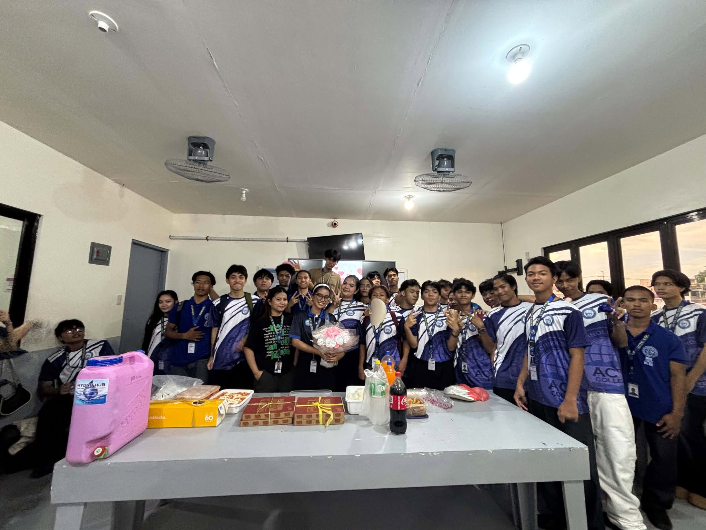

I made something for you, Ma'am...
A little letter with a big thank you. 🌷
A little letter for you...
Tap the envelope to open 💌
A little thank you from your student.

Thankyouuuusomuchhh!, Ma’am Xandra, for being such a kind, patient, and wonderful teacher to all of us. We are truly grateful for everything you have done for our class. We know that we can be very noisy, playful, stubborn, and sometimes difficult to handle, but despite all of that, you never gave up on us and you never left us behind. You continued to guide us, remind us when we were wrong, and encourage us to become better students and better people. Your patience means so much to us because you always tried to understand us even when we were being too playful or pasaway. We may not always show it, but we genuinely appreciate all the effort, time, and care you give to us every day. You are not only a teacher who teaches lessons inside the classroom, but also someone who inspires and supports us when we need it. We are very lucky to have a teacher like you, Ma’am Xandra. Thank you for believing in us, for staying patient with us, and most importantly, for never giving up on our class. We will always remember your kindness and the memories we made together. 💖💖 — [Bonafe]
Happy Teacher’s Day po, Ma’am! 💗 Thank you po sa lahat ng ginagawa mo para sa amin. Salamat po sa pagtanggap niyo sa amin HAHAHA. 🥹 Thank you rin po kasi lagi mo kaming pinapaalalahanan sa mga kailangan naming gawin at hindi mo kami hinahayaan na mapabayaan yung mga requirements namin. Salamat po sa pag-guide at pag-remind sa amin para makapasa at hindi kami maiwan. Sobrang thankful po kami na naging teacher namin kayo. Thank you po sa patience, pag-intindi, at sa effort niyo para sa amin. Happy Teacher’s Day po ulit, Ma’am! 💐❤️ — [monghe]
Thank you, Ma'am Xandra, sa walang sawang pag-unawa kahit sobrang kulit ng mga ibang mong anak. Still, and'yan ka pa rin, nagtuturo at hindi mo kami hinahayaan. Salamat, Ma'am Xandra! 🫰🤍 Belated Happy Teacher's Day, Godless! 🤍🤍 —[Alim]
hank you so much for your great patience with us in the ICT class. Thank you for guiding us every day. You are the best teacher ever. Thank you for teaching us and helping us learn. Stay healthy, Ma'am! Happy Teacher's Day, Boss G! 🥰 —[ RECHEL 🌷]
Happy Teacher's Day po, Ma'am Xandra—este, Mama Xander! 😭 Thankful po ako na ikaw po yung Ma'am namin. Saka kahit po may ginawa po kami tarandatohan, nand'yan ka pa para payuhan mo po kami. And nand'yan ka po agad pag need ka po namin sa room. Hehehe. Once again po, Happy Teacher's Day po, Mama Xandra! 🌷💞 — [CLARCKARAJA💞]
Happy Teacher's Day, Ma'am Xandra! I just wanna tell you that you're one of the best advisers I've ever had. You deserve everything successful and beautiful that happened into your life. Thank you for always being there through our section's ups and downs. As the President of the first advisory class you've handled in ACTS, I am truly sorry for my classmates' mess, for their being naughty, and for giving you stress that you really never deserve. I want you to know po na as their elected President, I am here to help you handle them. Papanindigan ko yung position na ako yung napili at pinagkatiwalaan mo po. I just wanna tell you rin po that I am truly grateful to have you and truly appreciate everything you did for us. Thank you for not being selfish at kami palagi ang inuuna mo kahit minsan hindi na deserve ng iba. Paulit-ulit man nagkakamali ang iba, pero and'yan ka para turuan sila kung paano itama lahat. Paulit-ulit man kaming papiliin kung sino ang gugustuhin naming maging adviser, IKAW AT IKAW ang PIPILIIN namin, Ma'am. You deserve every effort we gave to you. Thank you for not disappointing us, Ma'am. You're such a great adviser we've ever had. Thank you for everything and for understanding us. Hindi mo lang kami tinuturuan kung paano makipag-communicate, tinuturuan mo rin kami kung paano maging understanding at kung paano mag-give back sa taong nakapaligid sa amin. Yk the rest, Ma'am! Happy Teacher's Day and we love youuu so much, BOSS G! 😚 — [ROSAMAE]
Happy Teacher’s Day po, Ma’am Xandra! 🌷 Gusto ko lang po kayong thank you-han sa lahat ng patience, effort, at pag-intindi ninyo sa amin. Alam ko po na hindi kami madaling hawakan HAHAHA, lalo na kapag sabay-sabay kaming makulit. Pero kahit ganun, nand'yan pa rin po kayo para turuan, gabayan, at paalalahanan kami. Thank you po kasi hindi lang po kayo nagtuturo ng lessons sa ICT, pero tinuturuan niyo rin po kami kung paano maging responsible, makinig, at matuto sa mga mistakes namin. Kahit hindi ko po laging nasasabi, I really appreciate everything you do for our class. I'm also thankful na naging adviser/teacher namin kayo. Sana po lagi kayong healthy, happy, at patuloy na maging inspiration sa mga students niyo. 💗 Happy Teacher's Day po, Ma'am Xandra! 🌷 Thank you for everything, Ma’am xandra 🫶 — [Eduardo]
Thank you for being one of the teachers who continues to guide and believe in us.
We're grateful to have you as our teacher. 💗
Respectfully,
Your Student ♡